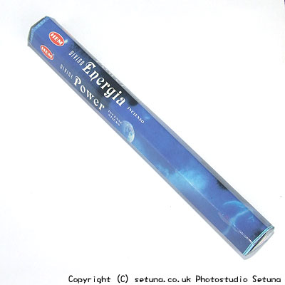

そのまま嗅ぐとレモンっぽい芳香剤のような香りです。
殺虫剤の「キンチョール」の一部分をとって来たような匂いでもあるし、「レモンのサワデー」のようでもあります。
火を点けるとレモングラスと、グリーンアップルが香り始め、少し遅れ気味にミントが追いかけてきます。
クローブやオールスパイスも少し香り始めます。
部屋全体から敷地周りまで香りが広がるタイプです。
窓を開けて点けると風に乗ってグリーンアップルのガムの様な甘い香りがふんわりと広がります。
虫除け効果があるのでどちらかというと夏向きのお香ですね。
このタイプのお香が苦手な方はアーモンド香と一緒に焚くと甘いナッツ系リキュールのような香りに変化します。
試してみてもいいかもしれませんね。
蚊・ハエ・ガ・アリ等の害虫除けとして効果を発揮します。
